Manual del Exhibidor — Portal de Reserva de Stands IIMP
Versión: 1.0
Audiencia: Empresas exhibidoras (Portal del Cliente).
Alcance: Uso del portal para reservar stands, firmar el contrato, seguir la
solicitud y gestionar pagos.
Idiomas: el portal se puede ver en español e inglés (selector ES/EN en la cabecera).
1. ¿Qué es este portal?
Es el Portal Oficial de Exhibidores del IIMP para la reserva de stands de sus
eventos: PERUMIN, ProExplo, World Mining Congress (WMC) y GESS.
Desde el portal usted puede:
- Ver el plano interactivo de stands del evento (mapa de pabellones y vista 3D).
- Reservar uno o varios stands en una sola operación.
- Configurar sus cuotas de pago y firmar el contrato de exhibición.
- Adjuntar los documentos que exige la revisión legal.
- Hacer seguimiento del estado de su solicitud.
- Gestionar sus pagos: adjuntar el voucher, solicitar la factura y descargar
comprobantes.
El flujo usa un Portal del Cliente con una cuenta por empresa. La contraseña y los
datos de la cuenta los administra el IIMP (backoffice); usted puede actualizar su
perfil y recuperar su contraseña por correo.
2. Acceso al portal
2.1 Solicitar cuenta (nuevo exhibidor)
- En la pantalla de inicio de sesión, haga clic en "Solicitar cuenta de nuevo
exhibidor".
- Complete el formulario: razón social, nombres, apellidos, correo corporativo,
RUC y teléfono (opcionales), cargo y mensaje (opcionales).
- EnvÃe la solicitud. Verá el mensaje "Solicitud enviada": RR.HH. del IIMP
revisará el pedido y habilitará el acceso.
2.2 Primer ingreso (credenciales temporales)
- Recibirá por correo un usuario y una contraseña temporal.
- Ingrese en "Reserva de stands" con ese correo y contraseña.
- El sistema pedirá cambiar la contraseña (mÃnimo 8 caracteres). La contraseña
temporal deja de ser válida al guardar.
- Luego se muestra la pantalla "Valida los datos de tu empresa": confirme o corrija
los datos registrados. Los campos resaltados con la etiqueta "Se usará en el
contrato" (razón social, RUC, dirección, representante legal y su DNI, correo y
teléfono) alimentan el contrato; revÃselos antes de confirmar.
- Confirme con la casilla de aceptación y continúe.
2.3 Iniciar sesión
- Ingrese con su correo electrónico o su RUC (11 dÃgitos) y su contraseña.
- Puede marcar "Recordar mi sesión en este equipo".
- Si el rol es de cliente, entrará directo a Mi Panel. Si es un usuario interno,
pasará primero por la selección de evento.
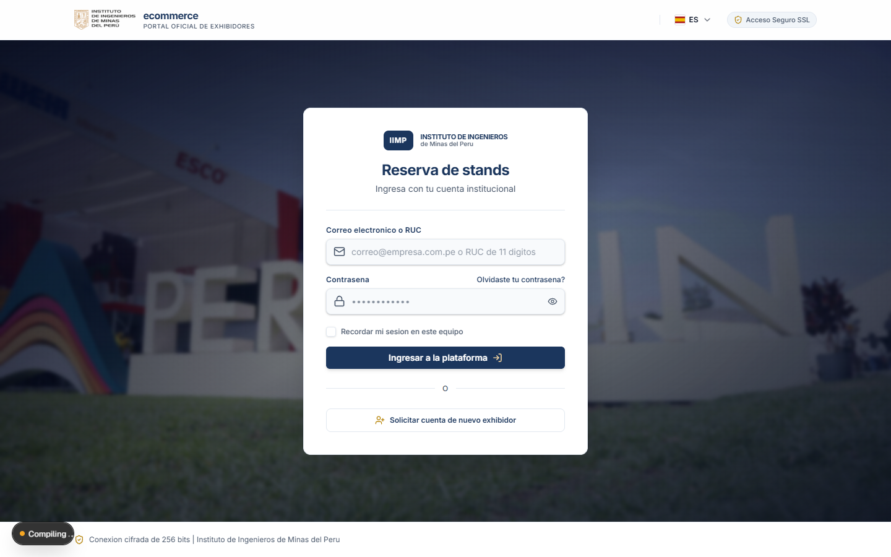
Figura 1 — Inicio de sesión: correo o RUC + contraseña.
Tras ingresar, el cliente llega a Mi Panel, con el resumen de sus reservas, cuotas
por pagar y los accesos directos al plano.
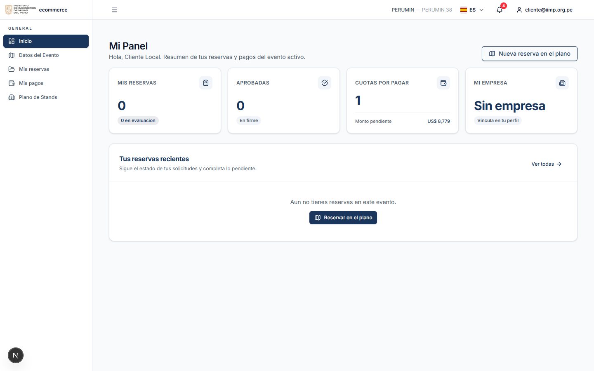
Figura 2 — Mi Panel: resumen de reservas, cuotas y accesos.
2.4 Recuperar contraseña
- En el ingreso, haga clic en "¿Olvidaste tu contraseña?".
- Escriba su correo corporativo y envÃe.
- Recibirá un enlace para restablecer (válido 30 minutos). Si no llega, revise
correo no deseado o solicite apoyo a la Mesa de Ayuda del IIMP.
2.5 Cerrar sesión
En la cabecera, abra su usuario (esquina superior derecha) y elija "Cerrar sesión".
3. Seleccionar evento
- Al ingresar (o al usar "Cambiar de evento" en la cabecera) verá la pantalla
"Selecciona tu evento" con las versiones vigentes agrupadas por vertical
(PERUMIN, ProExplo, WMC, GESS).
- Use el buscador o los filtros Todos / Vigentes / Otras para ubicar la versión
correcta.
- Haga clic en el evento para trabajar en él. Todo el portal (plano, reservas, pagos)
queda filtrado por el evento seleccionado.
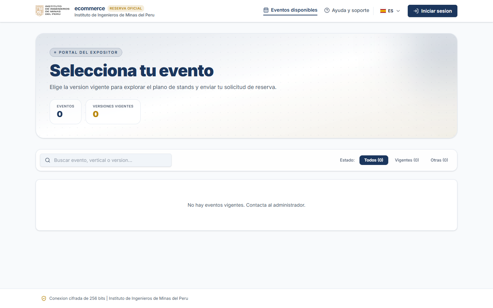
Figura 3 — Selección de evento (presala): versiones agrupadas por vertical.
Si no ve ningún evento vigente, contacte al administrador del IIMP: la publicación de
versiones la gestiona el IIMP.
4. El plano de stands
Ingrese desde "Plano de Stands" en el menú o desde el botón "Nueva reserva en el
plano" de Mi Panel / Mis reservas.
4.1 Primera visita: protocolo de reserva
La primera vez que entra al plano en la sesión, se muestra el aviso "Protocolo de
reserva" con los pasos del proceso (revisión por áreas, contrato por el SGC y
documentos) y un bloque de Asistencia para exhibidores. Ciérrelo con "Entendido";
no vuelve a mostrarse en esa sesión.
4.2 Mapa de pabellones (vista macro)
- El mapa muestra los pabellones con un indicador de disponibilidad por color:
Disponible (verde), Pocos (amarillo), Casi lleno (rojo) y Sin datos
(gris).
- Cada pabellón indica su contador, por ejemplo "39/49 disp.".
- Navegación: arrastre para mover, Ctrl + rueda para zoom.
- Haga clic en un pabellón para entrar a su plano 3D.
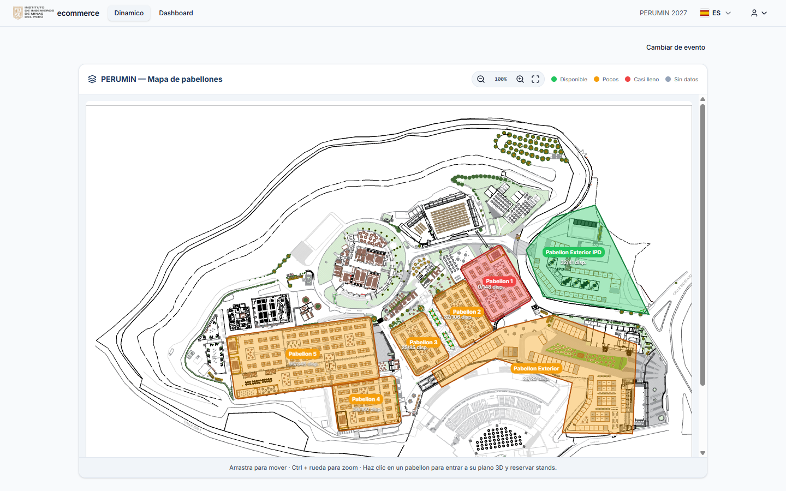
Figura 4 — Mapa macro: disponibilidad por color y protocolo de reserva (primera visita).
4.3 Plano 3D del pabellón
- Arrastre para rotar la vista y use la rueda para acercar.
- Cada stand muestra su número comercial en una etiqueta azul; los stands
reservados aparecen en gris (con la razón social de la empresa al pasar el
cursor) y los disponibles en verde/color según su tipo.
- La leyenda identifica los tipos de stand del pabellón, la selección actual y los
reservados.
- Haga clic en un stand disponible para agregarlo al panel "MI SELECCIÓN".
- En el panel puede ver el detalle del stand: pabellón, área, código, tipo, precio,
estado e imágenes/renders (cuando existan).
- Selección múltiple: puede agregar varios stands; el panel muestra el total y el
monto acumulado. Para quitar un stand, vuelva a hacer clic sobre él.
- Al terminar, pulse "Continuar con la Reserva (N)".
Un stand no reservable (sin vinculación al plano, reservado o en evaluación) no
puede agregarse a la selección.
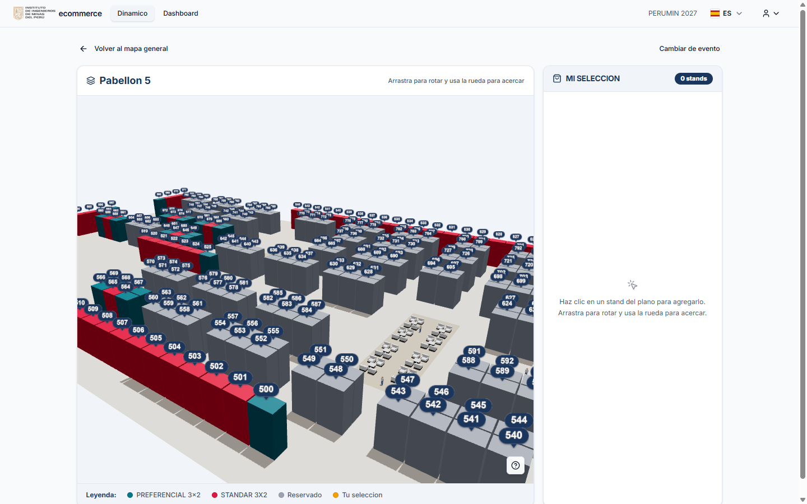
Figura 5 — Plano 3D del pabellón con el detalle del stand y el panel "MI SELECCIÓN".
4.4 Ver la ubicación de un stand reservado
- Desde Mis reservas → Ver detalle, use "Ver ubicación en el plano" para abrir
el recorte del pabellón con su stand destacado ("TU STAND") o "Ver en el mapa"
para abrir el plano 3D con el stand preseleccionado.
- Desde Datos del Evento también puede consultar el detalle de todos los stands
(código, tipo, estado, empresa, bloque y precio).
5. Reserva paso a paso (asistente de 4 pasos)
El asistente "Proceso de Reserva de Stands" tiene 4 pasos. Se puede retroceder con
"Volver"; la solicitud recién se crea en el paso 4. El borrador se conserva si
recarga la página.
Paso 1 — Tus datos
Complete los datos comerciales y de facturación:
- Comprobante: elija Factura o Boleta.
- Factura: el sistema pedirá RUC (11 dÃgitos) y autocompleta la razón social
(y la dirección fiscal si está disponible) desde SUNAT.
- Boleta: pedirá DNI (8 dÃgitos) y autocompleta el nombre desde RENIEC.
- Dirección fiscal (obligatoria).
- Contacto comercial y técnico: persona de contacto, teléfono (celular de 9
dÃgitos) y correo electrónico.
Mientras se consulta SUNAT/RENIEC verá la insignia "Buscando…"; al validar, la
insignia "Validado SUNAT/RENIEC". Pulse "Continuar".
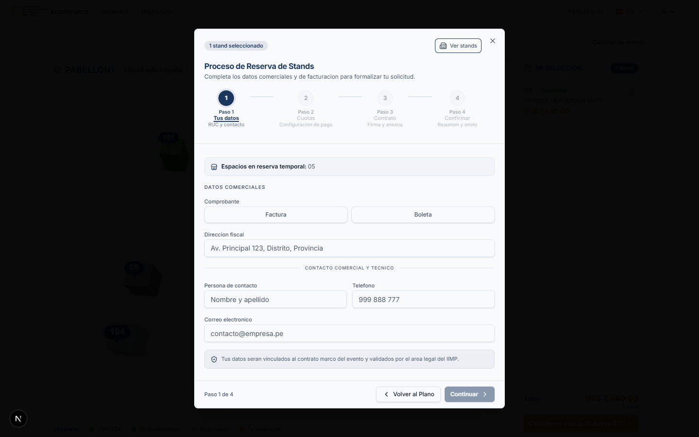
Figura 6 — Paso 1 "Tus datos": comprobante, RUC/dirección y contacto.
Paso 2 — Cuotas
- Revise el importe: Valor venta (neto) + IGV (18%) = Total a pagar. Los precios
del sistema son netos: el IGV siempre se agrega.
- Configure hasta 3 cuotas:
- Cada cuota tiene porcentaje y fecha de pago; los porcentajes deben sumar
100%.
- Atajos rápidos: 100% (1 cuota) y 50% + 50% (2 cuotas).
- Reglas de fechas: la primera cuota vence como máximo 1 mes después de la
reserva, la segunda hasta 2 meses y la tercera hasta 3 meses; debe haber al
menos 1 dÃa entre cuotas; tope absoluto 15/07/2027.
- Las fechas definitivas se confirman con Facturación del IIMP al momento del pago.
- Complete los Datos para el contrato: razón social del exhibidor, RUC, DNI del
representante, domicilio, representante legal (nombre completo) y partida
electrónica (opcional). Estos datos aparecerán en el contrato.
- Pulse "Generar contrato y continuar": se genera el contrato borrador (no
crea todavÃa la solicitud).
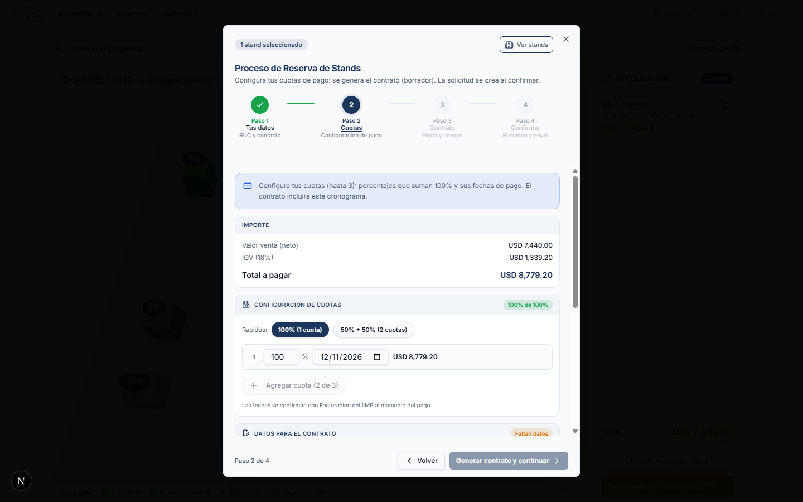
Figura 7 — Paso 2 "Cuotas": importe con IGV y configuración de cuotas.
Paso 3 — Contrato
- Pulse "Descargar contrato (DOCX)" para revisarlo. El contrato ya incluye sus
datos, los stands, los precios y el cronograma de cuotas.
- FÃrmelo de una de estas dos formas:
- Firmar digitalmente: requiere haber cargado antes su firma (PNG/JPG) en
Perfil. El servidor la estampa en el contrato.
- Manual: descargue, firme y luego use "O adjuntar contrato firmado" para
subir el archivo.
- Adjunte los 3 documentos requeridos (marcador "0 de 3"):
- Ficha RUC (o equivalente para empresas extranjeras).
- Vigencia de Poder (o equivalente).
- DNI o Pasaporte del Representante Legal.
- Formatos aceptados: PDF, JPG, PNG o DOCX, máximo 10 MB por archivo.
- Pulse "Continuar".
Sin estos documentos el trámite no puede enviarse a la revisión legal.
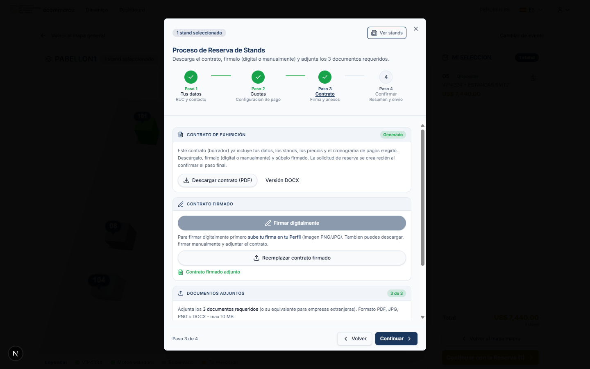
Figura 8 — Paso 3 "Contrato": descarga, firma y 3 documentos requeridos adjuntos.
Paso 4 — Confirmar
- Revise el resumen: stands seleccionados, facturación y datos comerciales y
contacto, y la documentación adjunta.
- Marque la "Declaración de representante legal" (acepta ser el representante legal
de la empresa para esta solicitud).
- Lea y acepte los términos y condiciones.
- Pulse "Enviar solicitud".
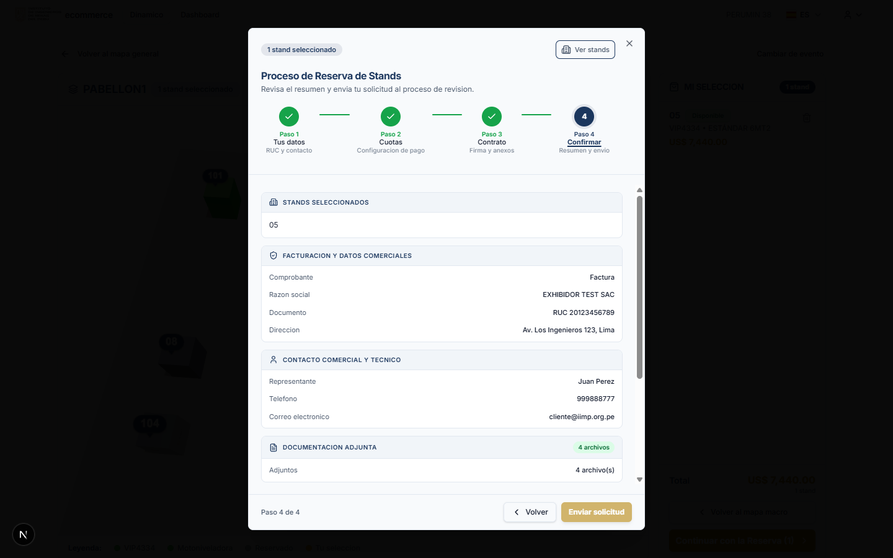
Figura 9 — Paso 4 "Confirmar": resumen de la reserva antes del envÃo.
¿Qué ocurre al enviar?
- Los stands pasan a estado "En evaluación" y quedan bloqueados para terceros.
- Se crea la solicitud y se registra en Mis reservas.
- Recibirá un correo de confirmación (en su idioma de perfil) y el IIMP recibe la
notificación interna.
- Comienza la revisión: Asociado (IIMP) → Legal (SGC).
6. Seguimiento: Mis reservas
Menú "Mis reservas". Cada tarjeta muestra stand, tipo, fecha, estado, empresa,
precio, documentos, coordenadas y una vista del flujo de evaluación
(Asociado → Legal (SGC)).
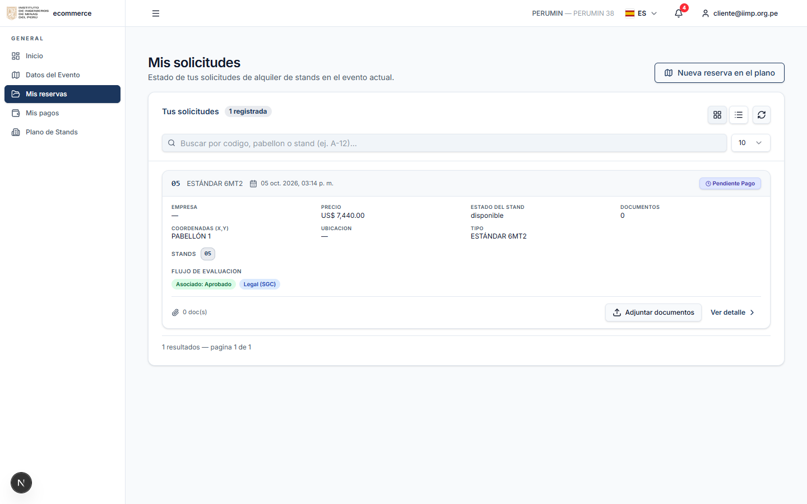
Figura 10 — Mis reservas: tarjetas con estado y acciones.
6.1 Estados de la solicitud
| Estado en pantalla |
Significado |
| Pendiente |
Solicitud creada; aún no hay respuesta de todas las áreas. |
| En proceso |
Al menos una revisión ya respondió. |
| Aprobado |
Todas las revisiones aprobaron. |
| Rechazado |
Alguna revisión rechazó (ver justificación en el detalle). |
| Pendiente Pago |
Aprobada y con plan de pago generado; pendiente de pago. |
| Pagado |
Todas las cuotas fueron confirmadas. |
6.2 Detalle de la solicitud
"Ver detalle" abre el expediente completo:
- Información general: fecha, stand(s), tipo e imágenes del stand.
- Expediente y documentación: documentos del administrador (contrato y anexos
del IIMP), tu contrato firmado y tus documentos adjuntos.
- Acción requerida: cuando el IIMP necesita algo de usted, aparece un bloque con la
tarea y el botón correspondiente.
- Re-evaluación: historial de re-evaluaciones, con documentos, fecha y autor.
- Estado de revisión: resultado por área (Asociado se revisa en el portal; Legal se
revisa en el SGC).
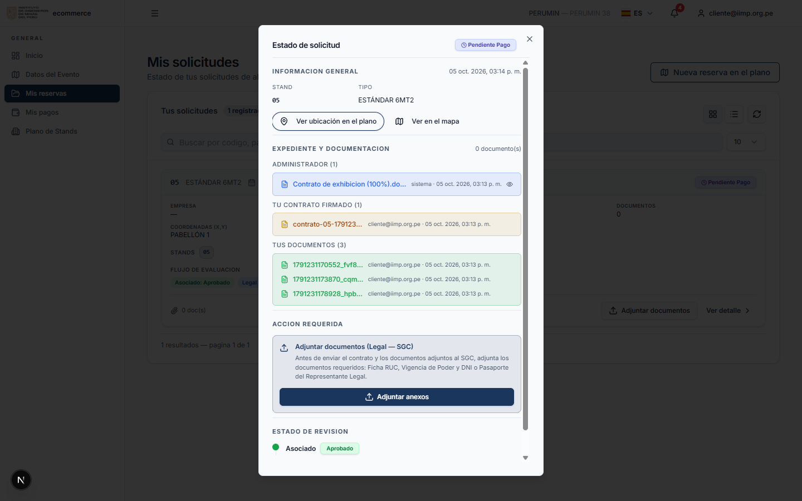
Figura 11 — Detalle de la solicitud: expediente, documentación y estado de revisión.
6.3 Acciones que puede necesitar realizar
- "Subir contrato firmado": cuando el IIMP publica el contrato para reservas
múltiples, descárguelo ("Descargar contrato"), fÃrmelo y súbalo.
- "Adjuntar anexos" (revisión Legal — SGC): adjunte Ficha RUC, Vigencia de Poder
y DNI o Pasaporte del Representante Legal. Son obligatorios para enviar el trámite.
- Subsanación SGC: si Legal devuelve el trámite, verá el motivo y podrá descargar
la versión vigente, firmarla y volver a subirla.
- "Solicitar Re-evaluación": disponible cuando la solicitud está Rechazada.
Permite adjuntar nuevos documentos, escribir la justificación y enviar la
solicitud para una nueva revisión.
- "Ver ubicación" / "Ver en el mapa": abre el recorte del pabellón ("TU STAND") o el
plano con el stand preseleccionado.
7. Pagos: Mis pagos
Menú "Mis pagos". Muestra el plan de cuotas de sus reservas aprobadas.
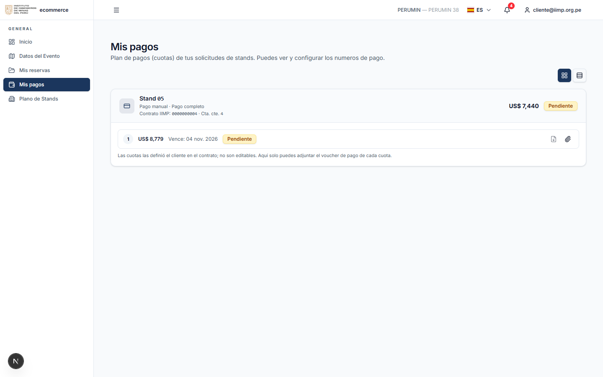
Figura 12 — Mis pagos: plan de cuotas, voucher y solicitud de factura.
7.1 Cuotas
- Cada cuota muestra: número, monto, fecha de vencimiento, estado y sus acciones.
- Si el plan proviene del contrato (definido por usted al reservar), las cuotas no son
editables aquÃ: solo puede adjuntar el voucher. Si el plan lo administra el
IIMP, puede agregar, editar o eliminar cuotas (la suma no puede superar el total; al
eliminar, las cuotas restantes se renumeran).
7.2 Adjuntar voucher
- Pulse el icono de voucher en la cuota ("Adjuntar voucher" / "Reemplazar
voucher").
- Suba el archivo de pago.
- La cuota queda bloqueada y "pendiente de confirmación" hasta que Facturación
del IIMP registre el pago. No se puede editar ni eliminar mientras tenga voucher.
7.3 Solicitar factura
Con la reserva pendiente de pago, cada cuota tiene el icono "Solicitar factura".
Al usarlo:
- Se registra la reserva oficial ante el IIMP: los stands pasan a RESERVADO y se
crea el contrato y la cuenta corriente.
- Se emite la factura/boleta de la primera cuota.
- La cabecera de la reserva muestra el Contrato IIMP y la Cta. cte.; la cuota
muestra la serie y número emitidos.
- Las cuotas siguientes las factura el IIMP en la fecha de cada cuota.
La acción no es automática: solicÃtela cuando corresponda. Evite hacer clic repetido;
el sistema bloquea el doble registro.
7.4 Comprobantes
- Cuando Facturación adjunta el comprobante fiscal, aparecerá el enlace
"Descargar factura (tipo número)" en la cuota.
- El voucher adjunto por usted queda visible para el IIMP en la bandeja de
Facturación.
8. Mi perfil
Menú de usuario → "Perfil".
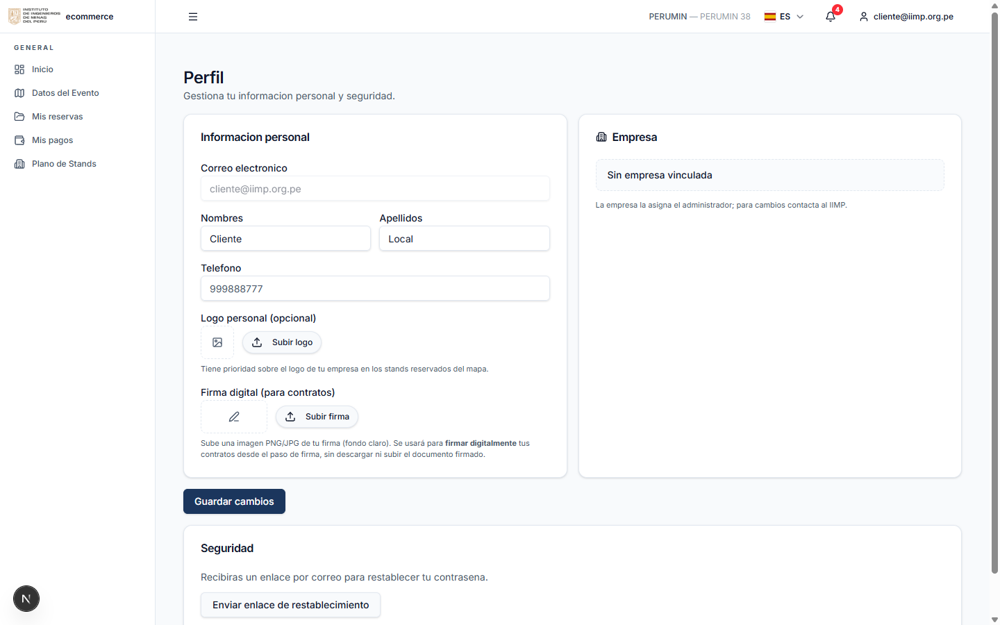
Figura 13 — Perfil: datos personales, firma digital y seguridad.
- Información personal: correo (solo lectura), nombres, apellidos y teléfono.
- Logo personal (opcional): tiene prioridad sobre el logo de la empresa en los
stands reservados del mapa.
- Firma digital: suba una imagen PNG/JPG de su firma (fondo claro). Se usará
para firmar digitalmente sus contratos sin descargar ni subir el documento.
- Empresa: la asigna el administrador; para cambios, contacte al IIMP. Si su cuenta
está vinculada a una empresa, podrá completar los datos del representante legal
(DNI validado con RENIEC, partida electrónica, dirección, celular y foto).
- Seguridad: "Enviar enlace de restablecimiento" envÃa un correo para cambiar su
contraseña.
9. Notificaciones
- Campana de alertas (cabecera): avisos internos del turno de revisión y de
re-evaluaciones. Puede "Marcar todas leÃdas".
- Correos: recibirá notificaciones de confirmación de reserva, resultado de revisión
y comprobantes, en el idioma de su perfil (ES/EN).
- Selector de idioma ES/EN: traduce el portal al inglés al instante; los correos y
documentos usan el mismo idioma.
10. Preguntas frecuentes
No veo eventos en "Selecciona tu evento".
El catálogo de eventos lo publica el IIMP. Contacte a la Mesa de Ayuda para habilitar la
versión.
No puedo agregar un stand en el plano.
El stand puede estar reservado, en evaluación o sin vinculación al plano. Reserve otro
stand o consulte a la Mesa de Ayuda.
¿La solicitud ya es una reserva firme?
No. Queda sujeta a revisión (Asociado → Legal). Los stands permanecen bloqueados
para terceros durante el proceso.
¿Puedo modificar las cuotas después de reservar?
Si el plan proviene del contrato, no son editables en Mis pagos; solo puede adjuntar el
voucher. Coordine cualquier cambio con Facturación del IIMP.
¿Cuándo se emite la factura?
Al usar "Solicitar factura" en Mis pagos: se emite la factura de la primera cuota y
las siguientes en la fecha de cada cuota.
Me rechazaron la solicitud, ¿qué hago?
Revise el detalle y la justificación, y use "Solicitar Re-evaluación" adjuntando los
documentos corregidos.
No puedo firmar digitalmente.
Primero suba su firma (PNG/JPG) en Perfil. Alternativamente, descargue el contrato,
fÃrmelo y adjúntelo.
No recibà el correo de credenciales/recuperación.
Revise correo no deseado y confirme con el IIMP que su correo está registrado. El
backoffice puede reenviar credenciales (genera una nueva contraseña temporal).
11. Glosario
| Término |
Significado |
| IIMP |
Instituto de Ingenieros de Minas del Perú, organizador de los eventos. |
| Stand |
Espacio de exhibición número único dentro del evento. |
| Pabellón |
Zona del evento que agrupa stands; se navega desde el mapa macro al plano 3D. |
| Reserva/Solicitud |
Registro de su pedido de stands; recorre un flujo de revisión. |
| Asociado |
Ãrea del IIMP que revisa la solicitud en el portal. |
| Legal (SGC) |
Revisión legal que ocurre en el Sistema de Gestión de Contratos del IIMP. |
| Contrato de exhibición |
Documento generado automáticamente con sus datos, stands, precios y cuotas. |
| Voucher |
Comprobante de pago que usted adjunta para que Facturación confirme la cuota. |
| Ficha RUC / Vigencia de Poder |
Documentos obligatorios para la revisión legal. |
| IGV |
Impuesto General a las Ventas (18%), se agrega al valor neto. |
| Re-evaluación |
Nueva revisión solicitada por usted cuando la solicitud fue rechazada. |
12. Soporte
Para dudas de reserva, documentos, contrato o estado de su solicitud, contacte a la
Mesa de Ayuda del IIMP (datos de contacto configurados por el IIMP y visibles en el
aviso "Protocolo de reserva" del plano).